Planifica personajes, escribe capítulos, construye tu mundo y exporta tu novela — todo en una sola app, sin suscripciones obligatorias ni datos en la nube.
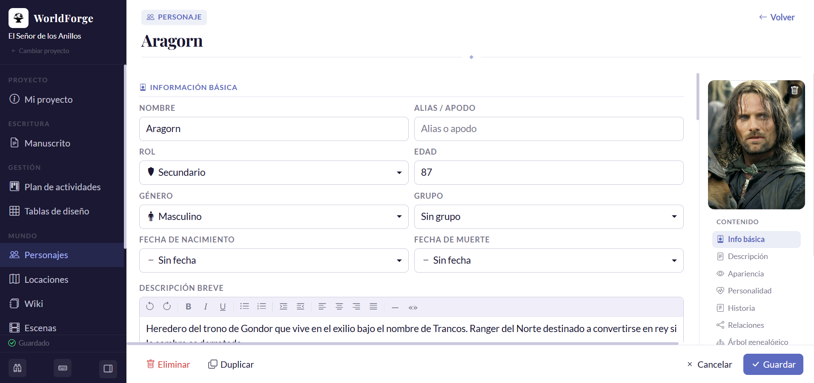
WorldForge acompaña cada etapa del proceso creativo en un solo lugar.
Crea fichas de personajes, diseña el mapa, organiza escenas y construye la wiki de tu universo antes de escribir la primera línea.
El editor por capítulos tiene modo Zen, corrector ortográfico offline, sprints cronometrados y versiones automáticas de cada capítulo.
Exporta tu manuscrito a DOCX, EPUB o TXT con un clic. Elige qué capítulos incluir y mantén el formato listo para editoriales o lectores beta.
Diseñado para escritores que quieren herramientas serias sin la curva de aprendizaje de Scrivener ni la dispersión de tener diez archivos abiertos.
Organiza tu novela por capítulos, asigna estados (Borrador, Revisión, Listo) y escribe con todas las herramientas a un clic — sin perder el foco en el texto.
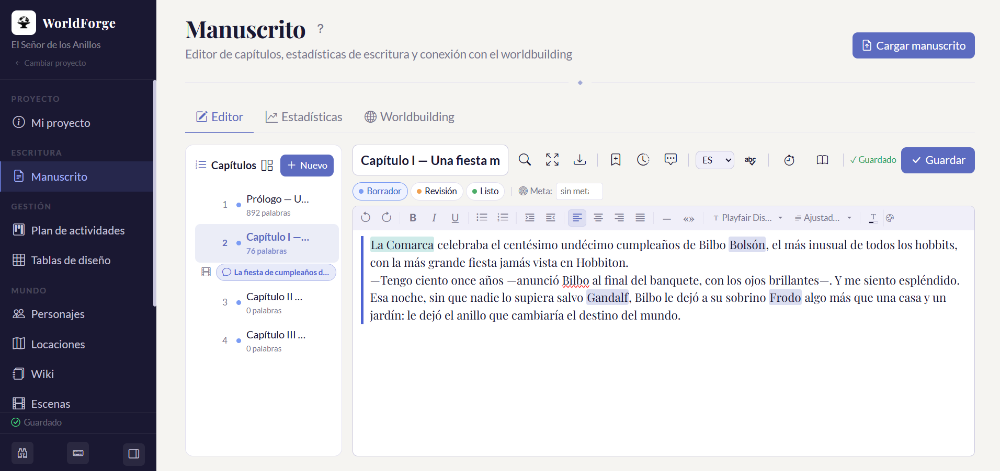
Activa el modo Zen y desaparece todo menos el texto. Sin barras, sin notificaciones, sin ruido visual — solo la lista de capítulos y tus palabras.
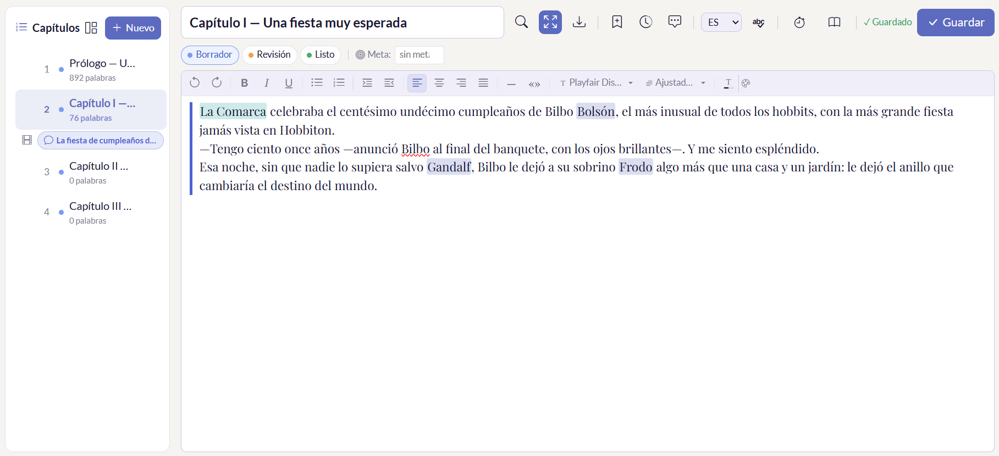
Un panel de estadísticas que te muestra tu progreso real: palabras escritas, racha diaria, heatmap anual y KPIs del manuscrito. Escribir con datos, no con suposiciones.
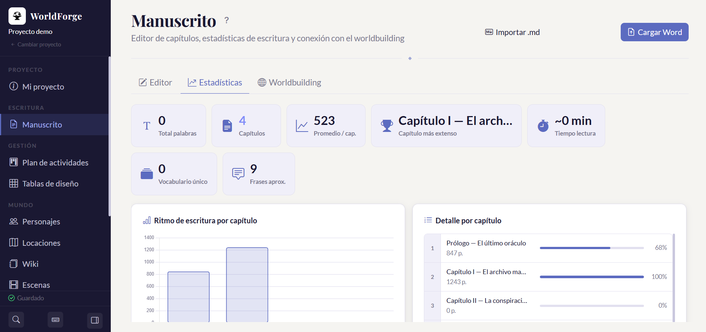
Las fichas de personaje reúnen todo lo que necesitas saber: descripción física, personalidad, historia, relaciones, arco narrativo y notas privadas del autor. Foto de perfil, sprite para el mapa y seguimiento del estado (vivo, muerto, desaparecido) incluidos.
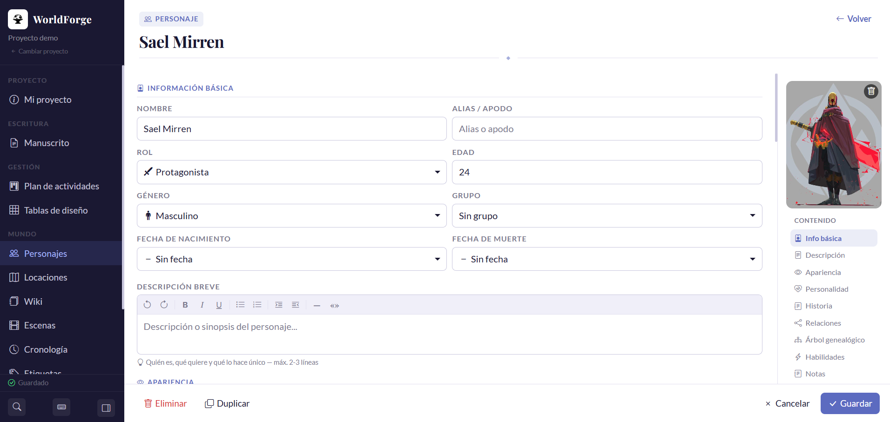
Las locaciones son fichas completas con galería de imágenes, descripción de ambiente, personajes que las frecuentan y escenas que ocurren en ellas. Todo enlazado al mapa interactivo para que nunca pierdas la coherencia geográfica.
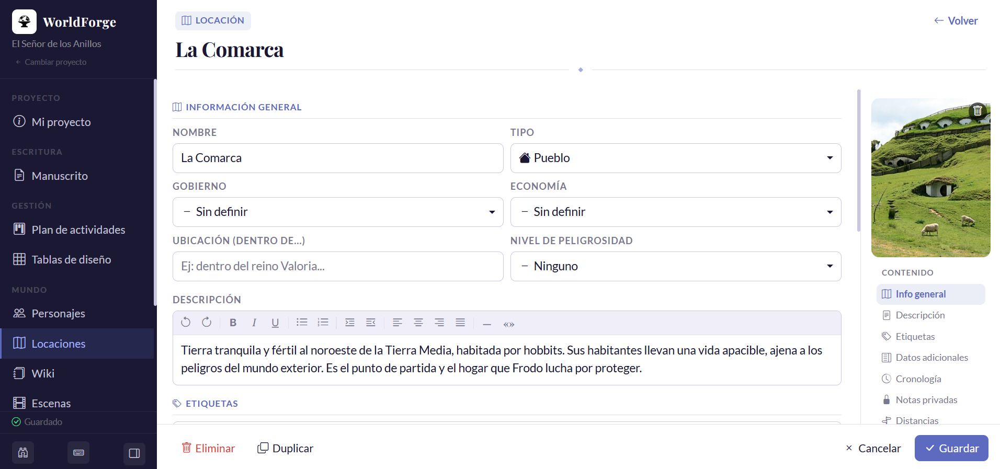
La Wiki es el lugar donde vive todo lo que no encaja en una ficha estándar: culturas, sistemas de magia, idiomas, religiones, objetos únicos, historia del mundo. Con secciones enteramente libres, tú decides qué documentar y cómo estructurarlo.
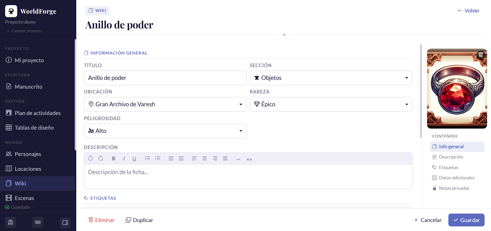
Dibuja el mapa de tu mundo con capas personalizadas, ubica personajes y locaciones, y calcula distancias y tiempos de viaje para que tu historia sea coherente.
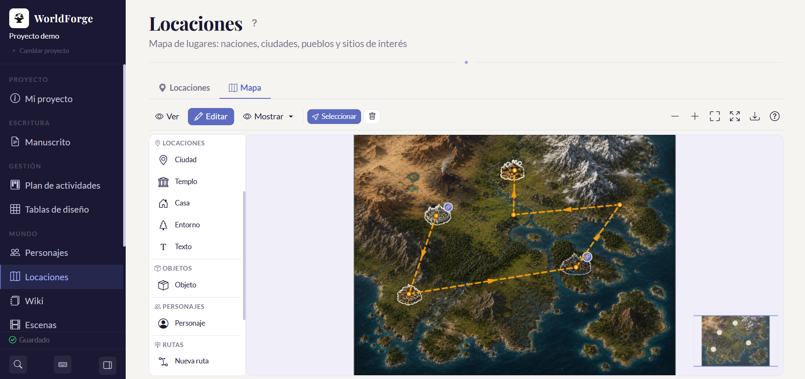
El gráfico de relaciones muestra las conexiones entre personajes con tipos personalizables y descripción libre en cada vínculo. El árbol genealógico construye la línea de sangre de cada personaje o familia, generación a generación. Tener esto organizado te evita contradicciones invisibles que arruinan la coherencia de la historia.
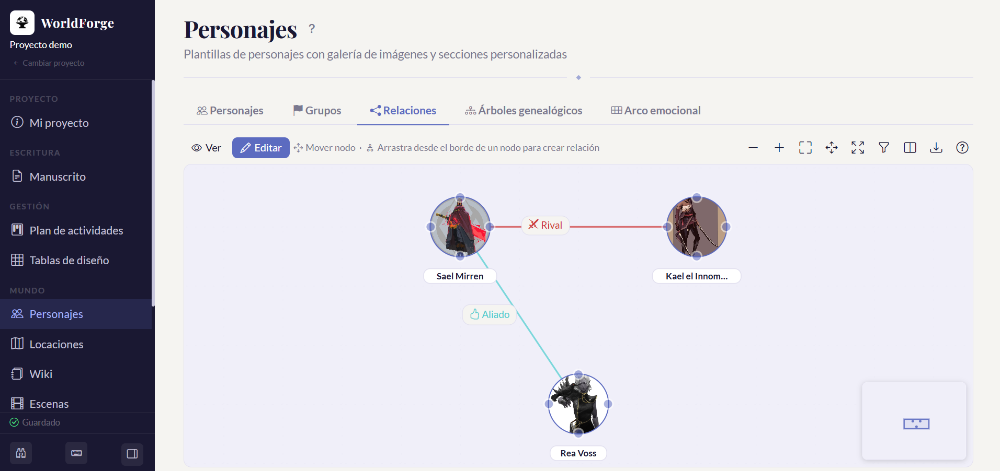
WorldForge no impone una estructura rígida. Define tus propios tipos de personaje, categorías de relación, tipos de escena y los meses de tu propio calendario — para que la herramienta encaje perfectamente en tu mundo, no al revés. Una fantasía épica, una space opera o un thriller contemporáneo tienen necesidades distintas.
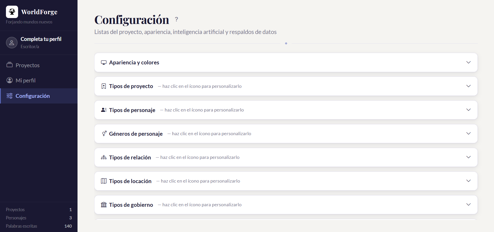
Mientras escribes, los nombres de personajes y locaciones se convierten en referencias activas que puedes consultar sin salir del capítulo. Y desde el buscador general encuentras cualquier dato en toda la app — fragmentos del manuscrito, fichas, wiki, escenas — en un solo campo, al instante.
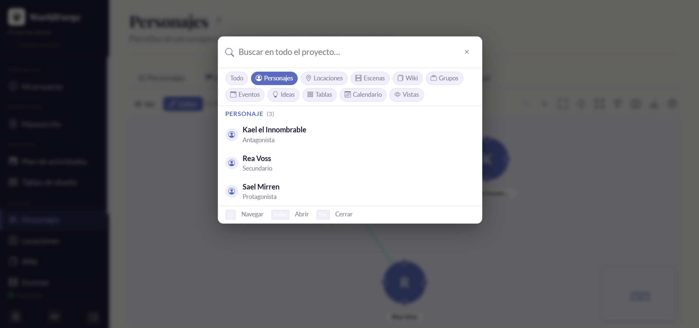
WorldForge integra en un solo proyecto todo lo que normalmente necesitarías en aplicaciones separadas.
Sin importar el género ni la experiencia, WorldForge se adapta a tu forma de trabajar.
Escribe y organiza novelas de cualquier longitud con capítulos, estados de revisión y exportación a formatos editoriales.
Construye mundos completos con mapas, linajes, wikis y sistemas de magia. Todo en un solo proyecto.
Interfaz clara desde el primer día. Sin configuración compleja ni manuales. Instala y empieza a escribir.
Tus historias solo existen en tu equipo. Sin cuentas, sin nube, sin que nadie lea tus borradores.
Las herramientas genéricas no están diseñadas para ficción. WorldForge, sí.
| Característica | WorldForge | Word / 365 | Google Docs | Scrivener |
|---|---|---|---|---|
| Gratis para empezar | ✓ | ✗ | ✓ | ✗ |
| 100% offline | ✓ | ✓ | Parcial | ✓ |
| Fichas de personajes | ✓ | ✗ | ✗ | Básico |
| Mapa interactivo | ✓ | ✗ | ✗ | ✗ |
| Árbol genealógico | ✓ | ✗ | ✗ | ✗ |
| Gráfico de relaciones | ✓ | ✗ | ✗ | ✗ |
| Corrector ortográfico offline | ✓ | ✓ | ✗ | ✗ |
| Asistente de IA integrado | ✓ | Copilot | Gemini | ✗ |
| Exportación a EPUB | Premium | ✗ | ✗ | ✓ |
| Precio | Gratis · $9.99/mes | $9.99/mes | Gratis | $59.99 único |
Comparativa orientativa. Precios y características de terceros sujetos a cambio.
Sin tarjeta de crédito para empezar. Sin límite de tiempo en el plan gratuito.
Sí, 100% offline. El editor, el corrector ortográfico, el mapa, las fichas de personajes y todos los módulos funcionan sin internet. Solo el asistente de IA y las actualizaciones automáticas usan internet, y únicamente si tú los activas.
En tu propio equipo, dentro de %APPDATA%\WorldForge\. Nunca se sincronizan con ningún servidor. Tus historias son tuyas.
Sí. WorldForge importa archivos .docx y .md directamente desde el editor de capítulos. El contenido se convierte automáticamente al formato interno de la app.
Actualmente WorldForge solo está disponible para Windows 10 y 11. Las versiones para Mac y Linux están en la hoja de ruta y se anunciarán en cuanto estén disponibles.
Tus proyectos y todos los datos quedan intactos en tu equipo. Simplemente vuelves al plan gratuito, con acceso completo a todas las funciones base. No pierdes ningún contenido.
WorldForge es compatible con OpenAI, Google Gemini y Anthropic Claude. Introduces tu propia clave de API en Configuración y la app la usa directamente — sin intermediarios, sin costos extra de nuestra parte. Pagas solo lo que consumes con tu proveedor de IA.
Windows SmartScreen muestra una advertencia cuando ejecutas una aplicación que todavía no tiene suficientes descargas registradas — es un proceso normal para apps nuevas. WorldForge no contiene malware. Solo necesitas dos clics para continuar:
Descarga WorldForge gratis y empieza a construir el universo de tu novela desde el primer día.
⬇ Descargar para Windows — gratis